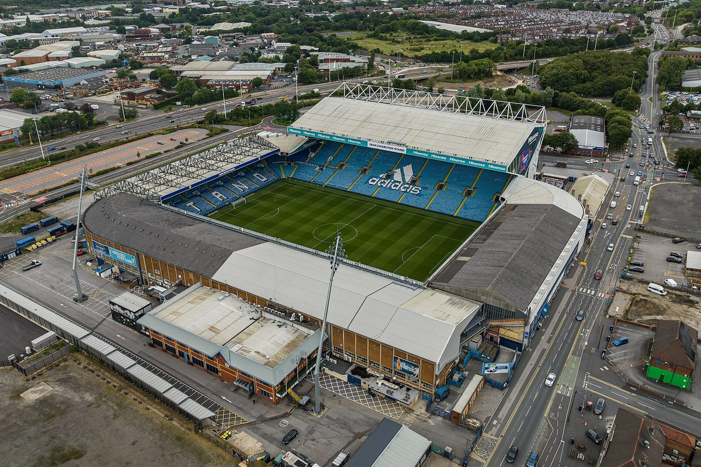
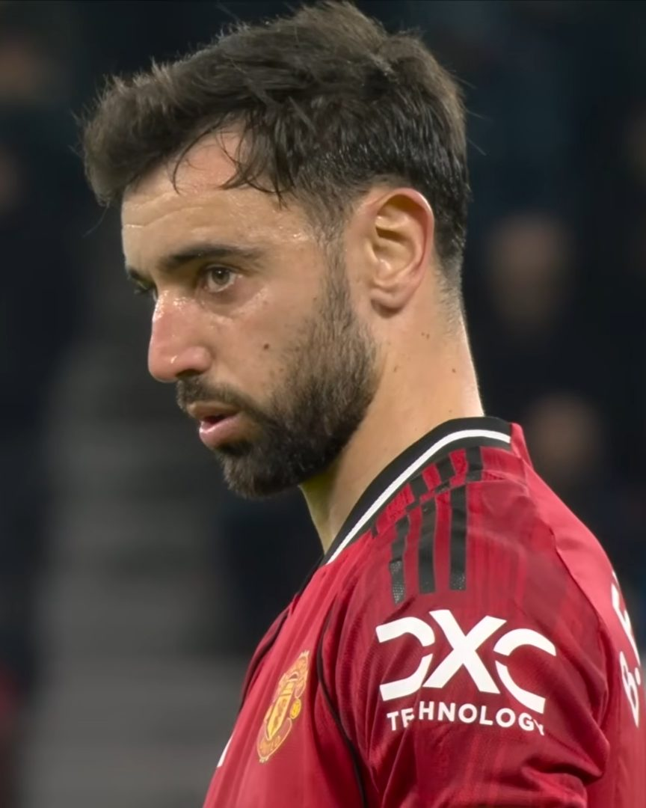

If you were hoping for a nice, gentle fixture to end a bad week, look away now. Manchester United's next game is at Elland Road, home of Leeds United, a club whose supporters dislike United more than almost anybody else in England. The atmosphere will be hostile. The home side are above United in the table. And their manager has a habit of beating Michael Carrick.
Still, there's an old saying in football: the best time to play a big game is straight after a bad result, because it gives you no time to feel sorry for yourself. United need a performance. Elland Road is exactly the kind of place where a team can find one.
Why do Leeds and United dislike each other so much? Part of the answer is six hundred years old. In the 1400s, two branches of England's royal family, the House of Lancaster and the House of York, fought a series of battles for the crown. Lancaster's symbol was a red rose; York's was a white one. Historians call it the Wars of the Roses. Manchester was in Lancashire, Leeds is in Yorkshire, and United play in red while Leeds play in white. Over the centuries, a royal feud turned into a football rivalry.
The Roses rivalry
Leeds won promotion back to the Premier League in 2025 and, to be blunt, they have settled in better than United have started. They're seventh, with two wins, three draws and just one defeat, last Saturday's 2–1 loss at Arsenal, where they took the lead before Arsenal hit back. Their manager, Daniel Farke, a German with a very recognisable pair of glasses, has built a team that's hard to beat and that plays with plenty of energy. Big striker Dominic Calvert-Lewin is expected to lead the line.
Leeds have injury problems of their own. Forward Mateo Joseph (knee) and captain Joe Rodon (hamstring) are out, and winger Daniel James is a doubt with a back problem. United will be without Luke Shaw and Kobbie Mainoo, and Bruno Fernandes is carrying a minor knock, although after his performance in Madrid nobody will want to leave him out. Leny Yoro's suspension only applies in Europe, so he's available.

| Category | Leeds | Man Utd | |
|---|---|---|---|
| 1 | League position | 7th, 9 pts | 13th, 6 pts |
| 2 | Last game | L 1–2 at Arsenal | L 0–2 at Atlético |
| 3 | Manager | Daniel Farke | Michael Carrick |
| 4 | Main danger | Dominic Calvert-Lewin | Bruno Fernandes |
| 5 | Missing | Joseph, Rodon (James doubtful) | Shaw, Mainoo |
| 6 | Last meeting | Man Utd 1–2 Leeds (Old Trafford, 13 April 2026) | |
Here's the uncomfortable statistic. Before Carrick came to United, he managed Middlesbrough in the Championship, where he kept running into Farke's Leeds. According to Yahoo Sports, the two have met six times in competitive matches, and Farke has won five. The most recent was in April, when Leeds won 2–1 at Old Trafford thanks to two goals from Noah Okafor, their first league win there since 1981.
But look closely at that one Carrick win. It came in August 2024, in the Carabao Cup, when his Middlesbrough side went to Elland Road and won 3–0. So Carrick knows exactly how to win at this ground. He's done it before. If Farke has become a bit of a nemesis, Sunday is the perfect day to end that.
Carrick v Farke: six competitive meetings
Calvert-Lewin is tall, strong and brilliant in the air. Lisandro Martínez is not tall, but he is fierce, clever and very good at getting his body in the way. After his outspoken interview this week, Martínez has something to prove. The best answer to any argument is a clean sheet.
Manchester United have won the English league title 20 times, more than any other club. Leeds have won it three times, most recently in 1991–92, the last season before the Premier League began. The runners-up that year? Manchester United. Leeds fans still mention it.
Elland Road will be loud, Leeds will start fast and United will need resilience in the first twenty minutes. If they survive that, the chances will come, just as they did in Madrid. This time, we think one of them goes in.
Leeds 1–2 Man Utd. (We said that about Atlético, too. We're not giving up.)